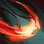

Manual de Noxus
Ambessa Medarda – A General de Ferro É uma lutadora de linha de frente (bruiser/tank) que se destaca em engajamentos coordenados e controle de zona. Ela é jogada principalmente na rota superior (top lane), onde impõe sua presença desde os primeiros minutos com grande resistência e dano consistente. Sua função é liderar investidas, quebrar a linha de frente inimiga com força bruta e punir posicionamentos errados com investidas poderosas. Com habilidades que refletem seu comando militar, ela protege aliados enquanto desfaz formações inimigas com precisão cirúrgica.

